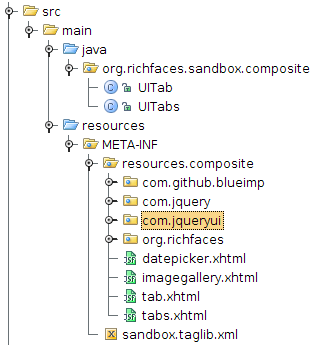
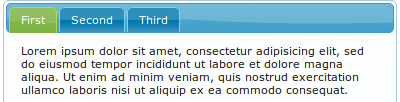
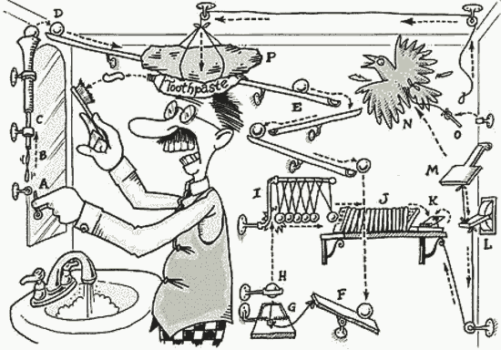
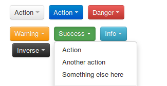

Leverage jQuery plugins
to create JSF Components
- Brian Leathem
- Senior Software Engineer, Red Hat
- JavaOne 2012 - San Francisco
- 2012-09-02
JSF - Standardized Component Model

Component-oriented
web framework
- Today we are going to talk about building JSF components,
- demonstrating how quickly you can build custom components specifically tailored to your use cases,
- leveraging one of JSF's most significant features: the standardized component model.
- This component model provides us with a blueprint for building portable components we can then "plug" into any JSF application
- providing us with a means to re-use our components across projects and teams,
- Thus empowering our JSF developers with customized rich functionality, without requiring them to code to arbitrary javascript APIs
Component Providers

|

|
|

|
- You may probably asking yourself "why mess with building your own components when there are so many component providers out there?"
- providing us with a wide variety of rich JSF components?
- Odds are that no JSF component set provides all the components needed to meet your specific use case requirements
- You are either faced with compromising your requirements to better align with the provided components
- Mixing and matching component providers if you are lucky enough to find another provider with the specific feature you need
- Or developing the component yourself
- By the end of this talk you'll be in a position to explore this 3rd option to it's fullest
Building JSF Components
-
Server-side code
- Components
- Renderers
- taglib xml
- faces-config.xml
-
-
Client-side code
- HTML
- CSS
- javascript
- This is all well and good, but JSF components are notoriously verbose to create
- Traditionally Tricky business
- Split code-base
- For starters, we're dealing with a split code base.
- We not only have to create the server side code: Components, Renderers, and xml config
- We also have to create the client side pieces: the html, javascript, and CSS responsible for the component's behaviour and user-interactions
Lots of browsers

|
||

|

|
|

|

|
+ mobile!
- All this client-code then has to be tested in a in a multitude of browsers
- and don't forget to test on mobile devices too
The solution
- Re-use existing javascript "widgets"
- There is a huge potential for code re-use
-
-
Google search comparison:
-
JSF Component:
- ~ 3 Million hits
-
Javascript Component:
- ~ 416 Million hits
-
JSF Component:
- But I'm not here to complain, I'm here to share a solution
- You should be, and can easily be building JSF components using existing javascript "widgets"
- By widgets, I mean self-contained free standing javscript code that encapsulates a user interaction
- The important piece here is that these are self-contained components, framework independent, and not requiring any back-end nor framework code to operate
Polyglot web apps
- Polyglot JVM
- Web frameworks in many languages/environments
- Consistent L&F throughout a heterogeneous application
- A Final motivation for building components on top of standalone javascript widgets - even when creating brand-new widgets
- In this world of ployglot on the JVM, and hetergenous server environments, it's not uncommon to have a single application spread accross multiple frameworks
- By using a consistent set of HTML markup, CSS, and javascript to enrich your application
- you can achieve a consistent L&F for your users irrespective of the back-end technology
Image Gallery

- For example, look at this jQuery UI imagegallery widget
- It's a trivial widget, with a rich usr interface.
- To use it, you point the jQuery plugin at some correctly formatted html markup, and you end up with a fully functional, single-purpose image gallery
- click on an thumbnail to get a zoomed-in popup of the photo, with controls to navigate through the provided collection of photos
jQuery UI
- jQuery plugins can also be fairly non-trivial
- here we have the jQuery UI widget set, providing more complex functionality with tabs, datepickers, modal alerts, etc.
Bootstrap
- Another widget set generating a lot of excitement right now is the twitter Bootstrap project.
- Bootstrap takes a stronger focus on HTML and CSS for widget behaviour, but does incorporate some javascript as well
Image Gallery
- A jQuery UI imagegallery plugin
- An output only component
- For example, look at this jQuery UI imagegallery widget
- It's a trivial widget, with a rich usr interface.
- To use it, you point the jQuery plugin at some correctly formatted html markup, and you end up with a fully functional, single-purpose image gallery
- click on an thumbnail to get a zoomed-in popup of the photo, with controls to navigate through the provided collection of photos
Image Gallery - Component
<!DOCTYPE html>
<html lang="en-US"
xmlns="http://www.w3.org/1999/xhtml"
xmlns:h="http://java.sun.com/jsf/html"
xmlns:ui="http://java.sun.com/jsf/facelets"
xmlns:cc="http://java.sun.com/jsf/composite">
<cc:interface>
<cc:attribute name="photos" />
<!-- plugin configuration -->
<cc:attribute name="selector" />
[ ... snip ... ]
<cc:attribute name="dialogClass" />
</cc:interface>
<cc:implementation>
<div id="#{cc.clientId}:div">
<ui:repeat value="#{cc.attrs.photos}" var="photo">
<a rel="gallery" href="#{photo.full}" title="#{photo.title}">
<img src="#{photo.thumb}" alt="#{photo.title}" />
</a>
</ui:repeat>
</div>
<h:outputScript library="javax.faces" name="jsf.js"/>
<h:outputScript library="composite/com.jquery" name="jquery-1.7.2.min.js"/>
<h:outputScript library="composite/com.jqueryui/js" name="jquery-ui-1.8.19.custom.min.js"/>
<h:outputScript library="composite/com.github.blueimp/js" name="load-image.js"/>
<h:outputScript library="composite/com.github.blueimp/js" name="jquery.image-gallery.js"/>
<h:outputStylesheet library="composite/com.jqueryui/css/ui-lightness" name="jquery-ui.custom.css"/>
<h:outputStylesheet library="composite/com.github.blueimp/css" name="jquery.image-gallery.css"/>
<h:outputScript>
var pluginOptions = {};
! '#{cc.attrs.selector}' || (pluginOptions.selector = '#{cc.attrs.selector}');
[ ... snip ... ]
! '#{cc.attrs.dialogClass}' || (pluginOptions.dialogClass = '#{cc.attrs.dialogClass}');
jQuery(function() {
$(document.getElementById('#{cc.clientId}:div')).imagegallery(pluginOptions);
});
</h:outputScript>
</cc:implementation>
</html>-
Let's take a look at the code required to make a JSF 2 component out of these javascript widgets
- Here we have a JSF 2 composite component, and starts like any other JSF facelet file
-
- The composite component has 2 sections, and interface and an implementation
- In the interface we specify the attributes of the facelet tag
- The attributes consist of the list of photos we want to include in our gallery
- and all the options available to configure the jQuery plugin (which I've cut out for brevity)
- Next we have the html to generate: we loop of the photos list, and output an anchor tag for each photo
- We then map the component attributes into a javascript object
- which we then pass as an parameter when we invoke the jQuery plugin
Packaging the cc

- Package your composite components in a jar file to share across teams/apps
Using the imagegallery component
<!DOCTYPE html>
<html lang="en-US">
<ui:composition template="/resources/template.xhtml"
xmlns="http://www.w3.org/1999/xhtml"
xmlns:h="http://java.sun.com/jsf/html"
xmlns:ui="http://java.sun.com/jsf/facelets"
xmlns:s="http://richfaces.org/sandbox/composite">
<ui:define name="body">
<h:form id="form">
Some sample of the component:
<s:imagegallery photos="#{galleryBean.photos}"/>
</h:form>
</ui:define>
</ui:composition>
</html>GalleryBean.java
@ManagedBean
@RequestScoped
public class GalleryBean {
private List<FlickrPhoto> photos;
public GalleryBean() {
photos = new ArrayList<FlickrPhoto>();
photos.add(new FlickrPhoto("title a", "http://flickr.com/a..."));
photos.add(new FlickrPhoto("title c", "http://flickr.com/c..."));
photos.add(new FlickrPhoto("title d", "http://flickr.com/d..."));
...
}
public List<FlickrPhoto> getPhotos() {
return photos;
}- This component gives a rich looking interface demo-time it is in fact a simple "output-only" component
jQuery UI Datepicker component
- The jQuery UI datepicker plugin
- An input component, bound to a backing bean
Datepicker composite component
<cc:interface>
<cc:attribute name="value" />
<cc:attribute name="showOn" />
<cc:attribute name="dateFormat" />
<cc:attribute name="buttonImageOnly" />
</cc:interface>
<cc:implementation>
<h:inputText id="input" value="#{cc.attrs.value}" />
<h:outputScript library="javax.faces" name="jsf.js"/>
<h:outputScript library="composite/com.jquery" name="jquery-1.7.2.min.js"/>
<h:outputScript library="composite/com.jqueryui/development-bundle/ui" name="jquery.ui.core.js"/>
<h:outputScript library="composite/com.jqueryui/development-bundle/ui" name="jquery.ui.widget.js"/>
<h:outputScript library="composite/com.jqueryui/development-bundle/ui" name="jquery.ui.datepicker.js"/>
<h:outputStylesheet library="composite/com.jqueryui/css/ui-lightness" name="jquery-ui.custom.css"/>
<h:outputScript>
var pluginOptions = {
buttonImage: "#{request.contextPath}/javax.faces.resource/calendar.gif.jsf?ln=composite/org.richfaces",
buttonImageOnly: "#{"true" eq cc.attrs.buttonImageOnly}"
}
! '#{cc.attrs.showOn}' || (pluginOptions.showOn = '#{cc.attrs.showOn}');
! '#{cc.attrs.dateFormat}' || (pluginOptions.dateFormat = '#{cc.attrs.dateFormat}');
jQuery(function() {
$(document.getElementById('#{cc.clientId}:input')).datepicker(pluginOptions);
});
</h:outputScript>
</cc:implementation>- let's look at the implementation of a component that accept user input - the datepicker
- This composite component follows nearly the same pattern as previous except for one difference:
- We are delegate to the JSF input component to return the widget data back to the JSF servlet
- The point I want to make is that so long as you can find a JSF component to delegate to you can write a JSF component leveraging any
datepicker usage
<s:datepicker buttonImageOnly="true"
dateFormat="yy-mm-dd"
showOn="both"/>
generated markup
<input class="hasDatepicker" id="form:j_idt16:input" name="form:j_idt16:input" type="text">
<img src="/composite-demo/javax.faces.resource/calendar.gif.jsf?ln=composite/org.richfaces" class="ui-datepicker-trigger">
<script type="text/javascript" src="/composite-demo/javax.faces.resource/jsf.js.jsf?ln=javax.faces"></script>
<script type="text/javascript"
src="/composite-demo/javax.faces.resource/jquery-1.7.2.min.js.jsf?ln=composite/com.jquery">
</script>
<script type="text/javascript"
src="/composite-demo/javax.faces.resource/jquery.ui.core.js.jsf?ln=composite/com.jqueryui/development-bundle/ui">
</script>
<script type="text/javascript"
src="/composite-demo/javax.faces.resource/jquery.ui.widget.js.jsf?ln=composite/com.jqueryui/development-bundle/ui">
</script>
<script type="text/javascript"
src="/composite-demo/javax.faces.resource/jquery.ui.datepicker.js.jsf?ln=composite/com.jqueryui/development-bundle/ui">
</script>
<script type="text/javascript">
var pluginOptions = {
buttonImage:"/composite-demo/javax.faces.resource/calendar.gif.jsf?ln=composite/org.richfaces",
buttonImageOnly:"true"
}
!'both' || (pluginOptions.showOn = 'both');
!'yy-mm-dd' || (pluginOptions.dateFormat = 'yy-mm-dd');
jQuery(function () {
$(document.getElementById('form:j_idt16:input')).datepicker(pluginOptions);
});
</script>jQuery UI tabs

- The jQuery UI tabs plugin
- A stateful component
tabs composite component
<cc:interface componentType="org.richfaces.sandbox.composite.UITabs">
</cc:interface>
<cc:implementation>
<div id="#{cc.clientId}">
<h:inputHidden id="selected" value="#{cc.selected}" />
<ul>
<ui:repeat var="tab" value="#{cc.tabChildren}"> <!-- #{cc.children} broken see: JAVASERVERFACES-2099 -->
<li>
<a href="##{tab.clientId}">#{tab.attributes['title']}</a>
</li>
</ui:repeat>
</ul>
<cc:insertChildren />
</div>
<h:outputScript library="javax.faces" name="jsf.js"/>
<h:outputScript library="composite/com.jquery" name="jquery-1.7.2.min.js"/>
<h:outputScript library="composite/com.jqueryui/development-bundle/ui" name="jquery.ui.core.js"/>
<h:outputScript library="composite/com.jqueryui/development-bundle/ui" name="jquery.ui.widget.js"/>
<h:outputScript library="composite/com.jqueryui/development-bundle/ui" name="jquery.ui.tabs.js"/>
<h:outputStylesheet library="composite/com.jqueryui/css/ui-lightness" name="jquery-ui.custom.css"/>
<h:outputScript>
var pluginOptions = { selected: '#{cc.selected}' }
$(function() {
var widget = $(document.getElementById('#{cc.clientId}'));
// initialize the plugin
widget.tabs(pluginOptions);
// register a tabselect change listener
widget.bind("tabsselect", function(event, ui) {
var selected_input = '#{cc.clientId}' + ':selected';
$(document.getElementById(selected_input)).val(ui.index);
// trigger an ajax update, executing the hiddn input element to update the component state
var options = { execute: selected_input }
jsf.ajax.request(selected_input, null, options);
});
});
</h:outputScript>
</cc:implementation>UITabs.java
@FacesComponent("org.richfaces.sandbox.composite.UITabs")
public class UITabs extends UINamingContainer {
enum PropertyKeys {selected}
public int getSelected() {
return (Integer) getStateHelper().eval(PropertyKeys.selected, 0);
}
public void setSelected(int selected) {
getStateHelper().put(PropertyKeys.selected, selected);
}
public List<UIComponent> getTabChildren() {
List<UIComponent> children = this.getFacet("javax.faces.component.COMPOSITE_FACET_NAME").getChildren();
List<UIComponent> tabChildren = new ArrayList<UIComponent>();
for (UIComponent child : children) {
if (child instanceof UITab) {
tabChildren.add(child);
}
}
return tabChildren;
}
}jQuery UI tab
<cc:interface componentType="org.richfaces.sandbox.composite.UITab">
<cc:attribute name="title" />
</cc:interface>
<cc:implementation>
<div id="#{cc.clientId}">
<cc:insertChildren />
</div>
</cc:implementation>
tabs usage
<s:tabs id="tabs">
<s:tab title="Tab 1">
Hello <b>Tab</b>!!
</s:tab>
<s:tab title="Tab 2">
With nested components:
<br/>
<s:datepicker dateFormat="yy-mm-dd"
showOn="both"
buttonImageOnly="true"/>
</s:tab>
</s:tabs>JSF 2 CC limitations
- When pushing the limits of composite components you often run up against either incomplete implementations or bugs
- Examples: using composite components with includes, cc.children we saw earlier, and others
- Additionally, sometimes we need to fallback on the greater expressivity of java
- For instance when we need to wrap our child components with new html
- In short composite components work well when you're requirements align well with an existing component to which you can delegate
RichFaces CDK
Use the RichFaces CDK to build "full-fledged" JSF components with the ease and syntax of JSF 2 composite components
Bootstrap Dropdown Button

- Group child buttons into a dropdown
- Dropdown renders it's children
Dropdown - CDK template
<cdk:root xmlns="http://jboss.org/schema/richfaces/cdk/xhtml-el"
xmlns:cdk="http://jboss.org/schema/richfaces/cdk/core"
xmlns:c="http://jboss.org/schema/richfaces/cdk/jstl/core"
xmlns:cc="http://jboss.org/schema/richfaces/cdk/jsf/composite">
<cc:interface>
<cdk:class>org.richfaces.bootstrap.renderkit.ButtonDropdownRenderer</cdk:class>
<cdk:superclass>org.richfaces.bootstrap.renderkit.ButtonDropdownRendererBase</cdk:superclass>
<cdk:renderer-type>org.richfaces.bootstrap.ButtonDropdownRenderer</cdk:renderer-type>
<cdk:renders-children>true</cdk:renders-children>
<cdk:component-base-class>org.richfaces.bootstrap.component.AbstractButtonDropdown</cdk:component-base-class>
</cc:interface>
<cc:implementation>
<div class="btn-group #{component.vertical ne null ? component.vertical.buttonClass : ''}">
<a data-toggle="dropdown" href="#" cdk:passThrough="on*"
class="btn #{component.severity ne null ? component.severity.buttonClass : ''}
#{component.scale ne null ? component.scale.buttonStyleClass : ''}
#{component.buttonStyle} dropdown-toggle">
#{component.title.concat(' ')}
<span class="caret"></span>
</a>
<ul class="dropdown-menu #{component.horizontal ne null ? component.horizontal.buttonClass : ''}">
<c:forEach var="child" items="#{component.getChildren()}">
<li>
<cdk:call expression="child.encodeAll(facesContext)" />
</li>
</c:forEach>
</ul>
</div>
</cc:implementation>
</cdk:root>- not delegating to JSF components
Dropdown Button - Component
@JsfComponent(
type = AbstractButtonDropdown.COMPONENT_TYPE,
family = AbstractButtonDropdown.COMPONENT_FAMILY,
renderer = @JsfRenderer(type = ButtonDropdownRendererBase.RENDERER_TYPE),
tag = @Tag(name = "buttonDropdown"))
public abstract class AbstractButtonDropdown extends UIPanel implements EventsMouseProps {
public static final String COMPONENT_FAMILY = "org.richfaces.bootstrap.ButtonDropdown";
public static final String COMPONENT_TYPE = "org.richfaces.bootstrap.ButtonDropdown";
@Attribute
public abstract String getTitle();
@Attribute
public abstract String getButtonStyle();
@Attribute
public abstract BootstrapSeverity getSeverity();
@Attribute
public abstract BootstrapSize getScale();
@Attribute
public abstract HorizontalPosition getHorizontal();
@Attribute
public abstract VerticalPosition getVertical();
}Dropdown - usage
<b:buttonDropdown title="Primary" severity="primary">
<h:link value="heroUnit"
outcome="/component/heroUnit/index.xhtml" />
<h:link value="tabbable"
outcome="/component/tabbable/index.xhtml"/>
<h:link value="buttonGroup"
outcome="/component/buttonGroup/index.xhtml"/>
<h:link value="navbar"
outcome="/component/navbar/index.xhtml"/>
</b:buttonDropdown>Links
- RichFaces Sandbox on github
- Blog Collapsible panel w/ Composite Components
- JSF Composite component API docs:
- Javascript "widgets"